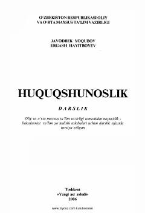

HNoyuridik OTM talabalari uchun davlat va huquq asoslaridan fundamental darslik.
Mazkur darslik oliy o'quv yurtlarining noyuridik ta'lim yo'nalishi talabalari uchun mo'ljallangan bo'lib, davlat va huquq asoslari, jamiyat hamda huquqiy munosabatlarning nazariy va amaliy jihatlarini yoritib beradi. Kitobda O'zbekistonda demokratik huquqiy davlat va fuqarolik jamiyatini barpo etishning huquqiy asoslari, qonun ustuvorligi hamda inson huquqlarini ta'minlash masalalari keng tahlil qilingan.